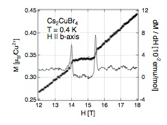
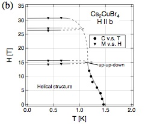
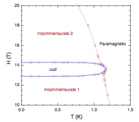
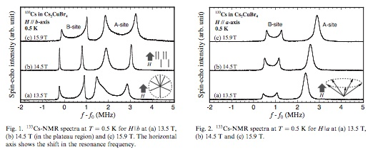
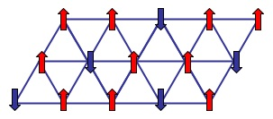
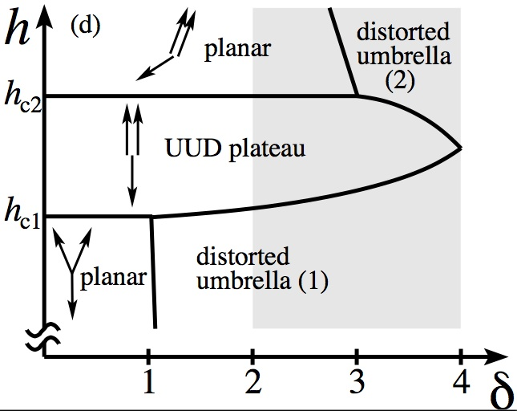

Magnetization plateau in triangular lattice antiferromagnet
Phase diagram of Cs2CuBr4 in magnetic field is remarkably different
from that of isostructural Cs2CuCl4: it has magnetization plateau at
M= Msat/3 (and another one, possibly, at M= 2 Msat/3). Here Msat
is the magnetization of the fully polarized state.
Experimental data by T. Ono et al. Phys.Rev.B 67, 104431 (2003), J.Phys.:Condens. Matter
16, S773 (2004), Prog. Theor. Phys. Suppl. 159, 217 (2005). See also
H. Tsuji et al., Phys.Rev.B 76, 060406 (2007).



These as well as NMR measurements (Y. Fujii et al., Physica B 346-347, 45 (2004),
JMMM 272-276, 861 (2004),
J.Phys.:Condens. Matter 19, 145237 (2007)) indicate collinear
UP-UP-DOWN (UUD) state,
predicted by interacting spin wave calculations of A.V. Chubukov and D.I. Golosov,
J.Phys.:Condens. Matter 3, 69 (1991). Closely related classical entropic mechanism
has been analyzed by H. Kawamura and S. Miyashita, J. Phys. Soc. Jpn. 54, 4530 (1985).
|
 |
 |
One of the problems with this explanation is that its key element, UUD state,
becomes classically unstable for arbitrary small spatial anisotropy in
the exchange, that is when J'/J < 1. It is believed
that Cs2CuBr4 has J'/J = 0.75 while Cs2CuCl4 has
J'/J = 0.34.
The resolution is that quantum fluctuations can stabilize classical unstable state.
This type of phenomena is known as "order-by-disorder". In our problem one needs to work
with interacting spin waves from the very beginning, and treat spatial anisotropy
(J - J') as a perturbation to the isotropic UUD state which is described by
interacting spin waves. It turns out that the competition between classical and quantum
effects can be parametrized by a single dimensionless parameter
δ=(40/3) S (J - J')2/J2. The plateau is locally stable for
0 < δ < 4. However, it is a global minimum only for 0 < δ < 2.
(It is interesting to note that δ=0.6 for Cs2CuBr4 while
Cs2CuCl4 has δ=2.9.) This, and numerous
BEC transitions out of the UUD state, are described in Quantum stabilization of the
1/3-magnetization plateau in Cs2CuBr4,
Jason Alicea, Andrey V. Chubukov, and Oleg A. Starykh, Phys. Rev. Lett. 102, 137201 (2009).
